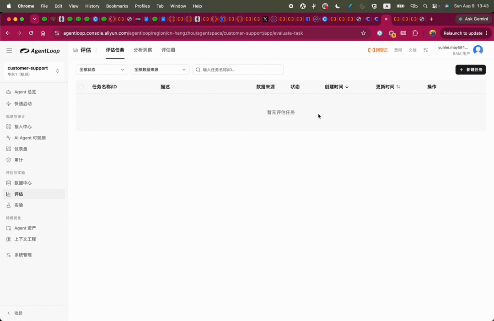
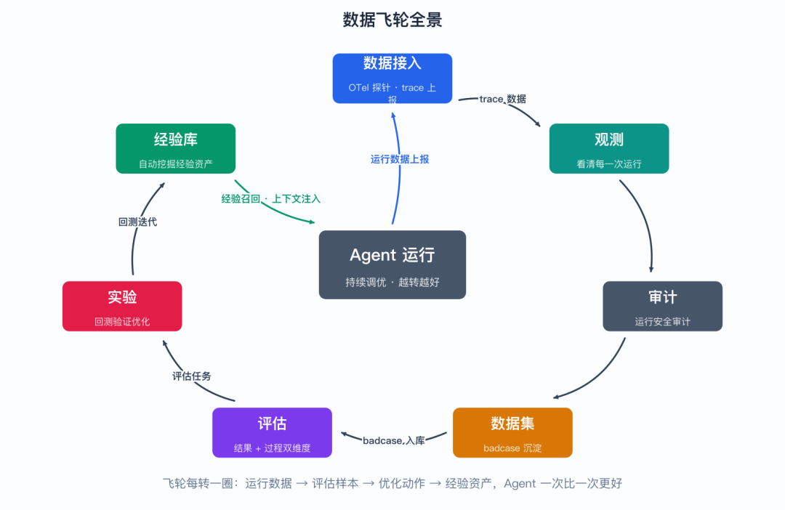
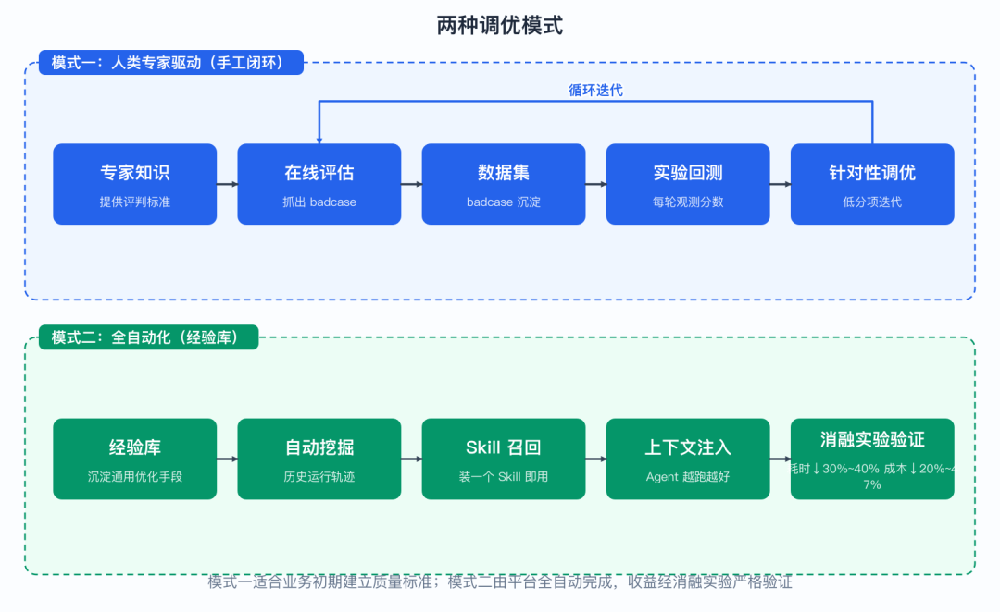
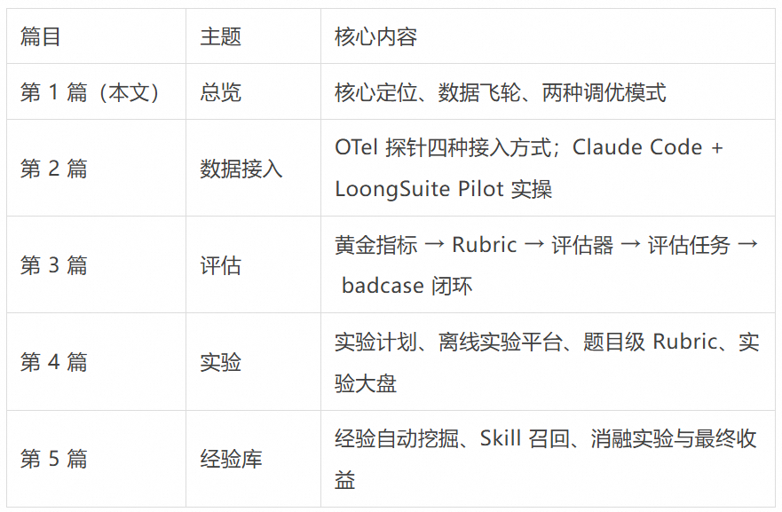
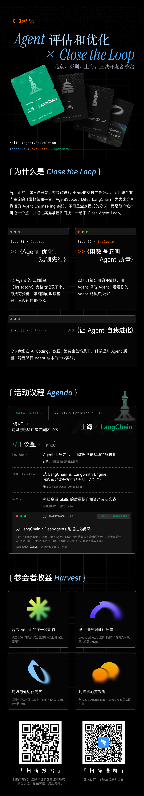

本文是 AgentLoop 数据飞轮实践系列 · 第 1 篇（共 5 篇），下一篇：数据接入 —— 四种方式把 Agent 连进 AgentLoop。
Agent 上线只是起点。真正决定 Agent 好不好用的，是上线之后能不能持续调优：用户反馈的问题能不能被系统性地发现、沉淀、验证、修复，并且让 Agent 一次比一次聪明。
这件事之所以难，是因为它天然是一个循环：不跑起来就没有真实数据，没有数据就不知道该优化什么，优化了又必须有办法证明真的变好了。很多团队的调优停留在“看几条用户吐槽、手动改改 Prompt”的阶段——零散、不可复现，也无法回答“这次改动到底是变好还是变坏”。
这正是 AgentLoop 要解决的核心问题。本文基于一次完整的实操演示（约 64 分钟，从创建工作空间到消融实验验证收益），带你总览 AgentLoop 的数据飞轮是怎么转起来的。后续四篇会把演示里的每一步拆开细讲，建议先读完本篇建立全景，再进入细节。
从一个客服 Agent 开始
Cloud Native
演示从创建一个工作空间开始。我们创建一个客服场景的 Agent —— Customer Support，并选择自动创建工作空间：
图 1：创建客服 Agent 工作空间
工作空间（AgentSpace）是后续一切资源的边界：数据、数据集、评估器、实验都归属在某个空间之下。选择“自动创建”之后，平台会把客服场景常用的基础资源一并准备好，省去从零搭建的麻烦。
这个客服 Agent 基于 Claude Code / Claude Agent SDK 构建——它是 AgentLoop 自身的一个客服 Agent。选它做演示有一个好处：这类 Agent 的接入方式很有代表性（探针或 webhook 两条路），第 2 篇会借它完整走一遍接入流程。后续的评估、实验、经验注入，也都围绕这个 Agent 展开。
AgentLoop 的核心定位：持续调优
Cloud Native
用一句话概括 AgentLoop 的核心事情：帮助用户调优 Agent，覆盖从 Agent 开发到上线之后的持续调优全过程。
注意“全过程”三个字。开发期的调优靠测试集和直觉还能应付，上线之后的调优面对的是真实、发散、持续涌入的用户请求——这时需要的不是几次手工调优，而是一套能自动发现问题、沉淀资产、验证效果的机制。AgentLoop 提供的就是这样一组端到端的原始能力，并把它们串成一个数据飞轮：

图 2：接入、观测、审计、数据集、评估、实验等功能入口
飞轮的转动路径是：
1. 数据接入：把 Agent 的 trace 数据接入上来（在接入中心完成）。这是一切的地基——没有数据，后面所有环节都是空转；
2. 观测：对 trace 数据做观测，看清 Agent 的每一次运行：调了哪些模型、用了哪些工具、走了什么路径；
3. 审计：对运行数据做安全审计，覆盖合规视角的检查；
4. 数据集：观测中发现的 badcase（回答糟糕、流程跑偏的个案），保存沉淀到数据集。数据集是飞轮的“弹药库”，后面实验回测用的就是它；
5. 评估：创建评估任务，从结果和过程两个角度评估 Agent 的响应质量——不只看最终答案对不对，也看执行过程合不合理；
6. 实验：评估之后挑出 badcase 存进数据集，通过实验一轮一轮回测，建立实验计划。每回测一轮观测一次整体分数，分数低就继续针对性调优；
7. 经验库：后台算法自动化地从运行轨迹中挖掘经验，反哺 Agent——这是飞轮里唯一不需要人类专家介入的环节。
每转一圈，Agent 的运行数据变成评估样本，评估结论变成优化动作，优化效果又被下一轮评估验证——这就是“数据飞轮”的含义。飞轮的关键不在于某一个环节多强，而在于环节之间首尾相接：评估的产出是实验的输入，实验的结论又指回下一轮评估，经验库则让每一圈都比上一圈起点更高。

图 3：数据飞轮全景：接入 → 观测 → 审计 → 数据集 → 评估 → 实验 → 经验库，经验再反哺 Agent
两种调优模式
Cloud Native
围绕这套能力，AgentLoop 把调优过程分成两种模式，对应不同阶段的诉求。可以理解为：模式一是“人开车”，模式二是“自动驾驶”，而演示会把两条路都走一遍。
▍模式一：人类专家驱动
有些调优需要人类专家输入——特别是特定行业、领域的知识。什么样的回答算“好”，在金融、医疗、客服等不同场景里标准完全不同，这些判断标准没法凭空自动化，必须由懂业务的人给出来。这种模式下：
人类专家提供评判标准（什么样的回答是好的），驱动整个调优流程的建立；
数据接入后，通过在线评估把 badcase 抓出来；
badcase 保存进数据集；
通过实验一轮一轮回测，每轮观测整体分数；
发现哪个分数低，就继续针对性调优，循环迭代。
这是一条“专家知识 → 评估标准 → 数据沉淀 → 回测验证”的手工闭环，适合业务上线初期建立质量标准。它的价值不只是抓出几个 badcase，更重要的是把专家头脑里“这个回答不行”的隐性判断，固化成可复用、可回测的显性标准（Rubric）——这份标准本身就是团队的资产。
▍模式二：全自动化（经验库）
另一种是端到端的全自动模式，不需要人类专家介入：
把通用 Agent 常见的优化手段沉淀成经验库；
数据接入后开启经验库，平台自动从 Agent 的历史运行轨迹中挖掘经验；
在 Agent 里安装一个 Skill，就能自动把经验召回出来；
经验本质上是 Agent 运行历史轨迹中沉淀下来的经验资产，类似沉淀出来的 Skill 信息。
通用优化手段包括：工具调用的执行情况、延时、执行准确率、执行路径等通用场景。这些维度不依赖具体业务，任何 Agent 都会遇到，因此适合自动化挖掘。但面对真实业务场景时，往往还有自定义的业务需求，所以经验注入的效果需要用实验严格验证——经验到底帮没帮上忙、怎么注入收益最大，要用数字说话，这就是本系列最后一篇消融实验要讲的内容。
两种模式不是二选一，而是互补：模式一建立标准、兜住业务底线，模式二在标准之上持续自动增益。演示的顺序也正是这样——先走手工闭环，再开全自动化。

图 4：两种调优模式：人类专家驱动的手工闭环 vs 经验库全自动化
本系列的路线图
Cloud Native
这次实操演示的顺序，恰好是数据飞轮转一圈的顺序。本系列将按以下路线展开：

演示将先完整走一遍“人类专家驱动”的手工调优链路（数据接入 → 评估 → 实验），再演示全自动化的经验库，最后用消融实验证明经验注入的真实收益：耗时降低 30%~40%，成本降低 20%~47%。
读这个系列你能拿到三样东西：一是可直接照做的操作路径（每一步演示里都有真实画面）；二是每个环节背后的设计逻辑（为什么要有采样、为什么要题目级 Rubric、为什么经验要做护栏）；三是一套验证方法论（怎么用实验和消融证明优化真实有效）。如果你正在负责一个已上线 Agent 的质量，这套流程基本可以原样搬过去。
下一篇预告：数据接入是整个飞轮的起点。AgentLoop 基于 OTel 标准协议和探针技术提供了四种接入方式，我们将亲手把 Claude Code 构建的客服 Agent 接入平台——详见第 2 篇。
